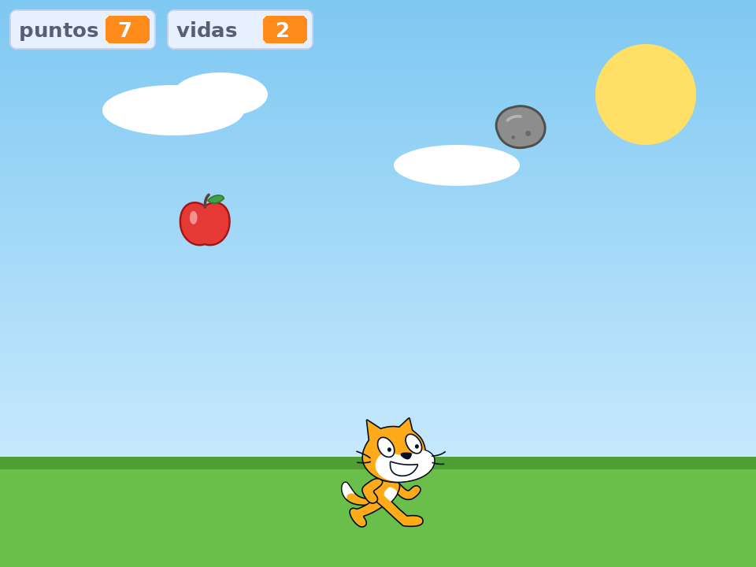
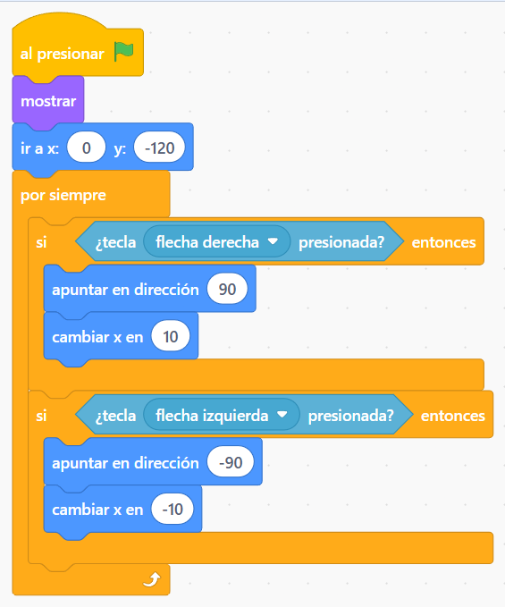
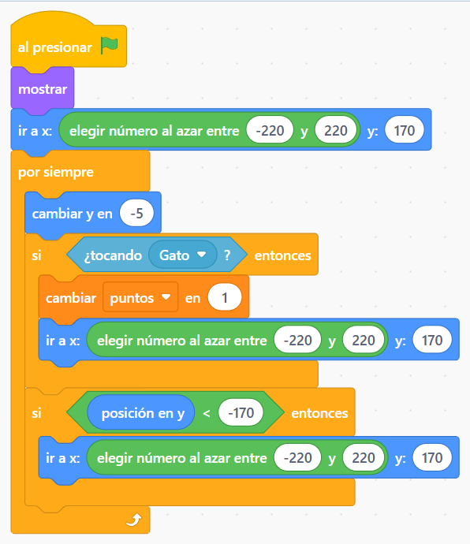
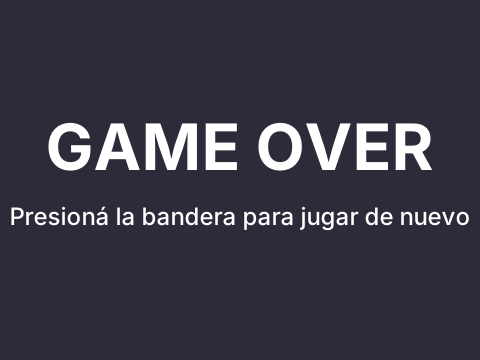
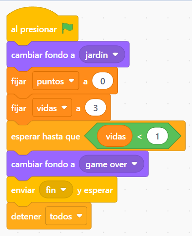
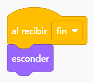

4° grado · Scratch
El gato y la manzana: nivel 2
Agregamos una piedra que te saca vidas y un Game Over cuando te quedás sin vidas.

Abrí tu juego del gato y la manzana
Entrá a Scratch y abrí el proyecto que hicimos la clase pasada, donde el gato atrapa la manzana. Hoy lo vamos a convertir en un juego de verdad: con vidas, un peligro y un final.
💡 Si no lo encontrás, avisale al profe y arrancamos uno nuevo.
Creá las variables NUEVO
Andá a la categoría Variables (naranja) y tocá Crear una variable. Creá: puntos y vidas. Elegí “Para todos los objetos”.
Una variable es como una cajita donde el juego guarda un número que va cambiando.
💡 Si ya tenías la variable puntos de la clase pasada, no la crees de nuevo.
Revisá el código del Gato
El gato se mueve con las flechas ← y →. Este código ya lo tenés de la clase pasada. El bloque apuntar en dirección hace que el gato mire para el lado que camina.
💡 Para que el gato no quede patas para arriba: en el objeto Gato, poné el estilo de rotación “izquierda-derecha” (tocando “Dirección”).

La Manzana
La manzana cae desde arriba (por eso cambiar y en -5: el número negativo la hace bajar). Si toca al Gato, suma 1 punto y vuelve arriba en un lugar al azar. Si llega al piso, también vuelve arriba.

Agregá la Piedra NUEVO
La forma más fácil: hacé clic derecho en la Manzana → duplicar. Cambiale el nombre a Piedra y, en Disfraces, elegí una piedra (por ejemplo “Rocks”) o dibujá una.
Después cambiá una sola cosa del código: en vez de sumar puntos, la piedra resta 1 vida.
💡 ¡Duplicar ahorra un montón de trabajo! Casi todo el código es igual al de la manzana.
Prepará los fondos NUEVO
Tocá el Escenario (abajo a la derecha) y entrá a Fondos. Necesitás un fondo para jugar (le pusimos jardín) y fondos para el final: game over. Podés pintarlos y escribir el cartel con la herramienta de texto.

El Escenario es el árbitro NUEVO
En el Escenario va el código que controla el juego: al empezar pone el fondo, carga los puntos en 0 y las vidas en 3. Después espera hasta que las vidas sean menos de 1. Cuando pasa: muestra game over, avisa fin y detiene todo.

Cuando termina, todos se esconden
En el Gato, la Manzana y la Piedra agregá este código: cuando reciben el mensaje fin, se esconden. Así se ve bien el cartel del final.
💡 Fijate que la manzana y la piedra tengan el bloque “mostrar” al empezar, si no ¡no aparecen en la próxima partida!

¡A jugar!
Tocá la bandera verde y probá tu juego. ¿Atrapás manzanas y esquivás piedras? ¿Aparece el cartel del final?
⭐ Desafíos extra
¿Terminaste? Probá alguno de estos:
- Hacé que la piedra caiga más rápido que la manzana.
- Agregá un sonido cuando el gato atrapa una manzana.
- Que el gato diga “¡Ay!” cuando lo toca la piedra.